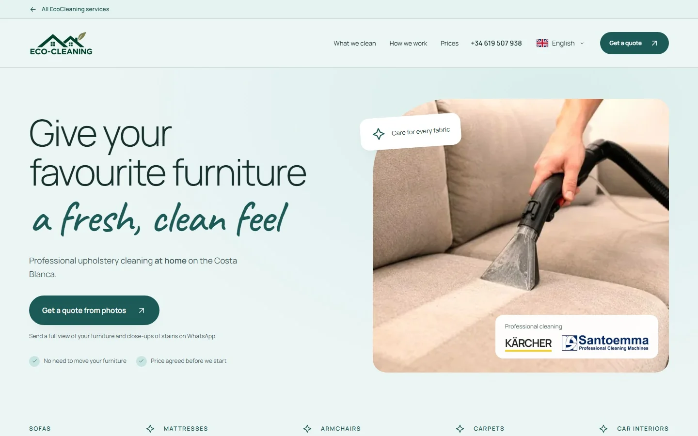
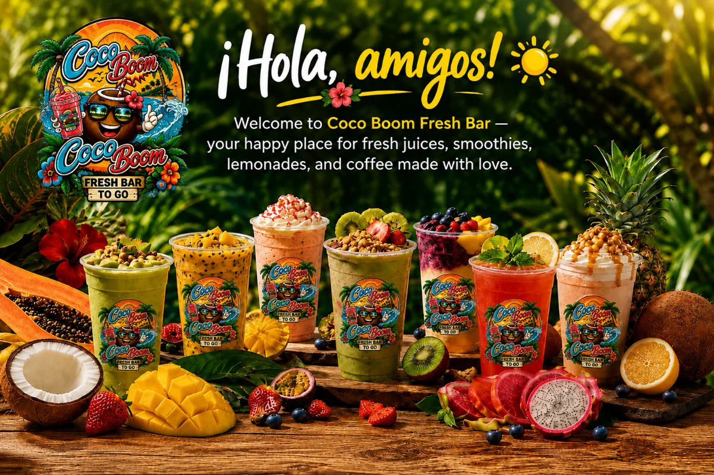
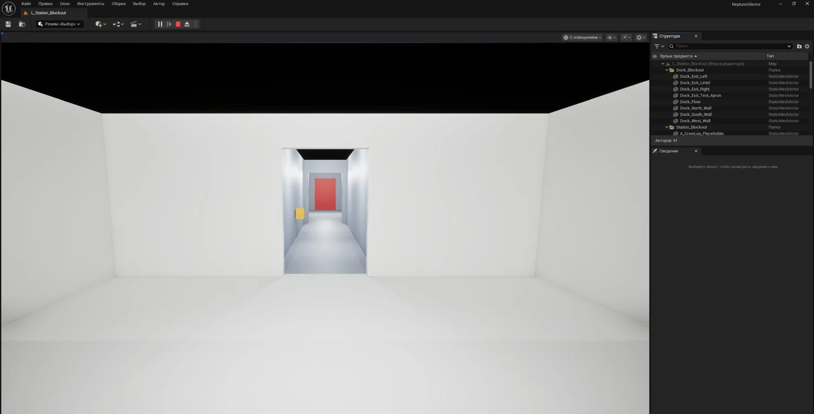
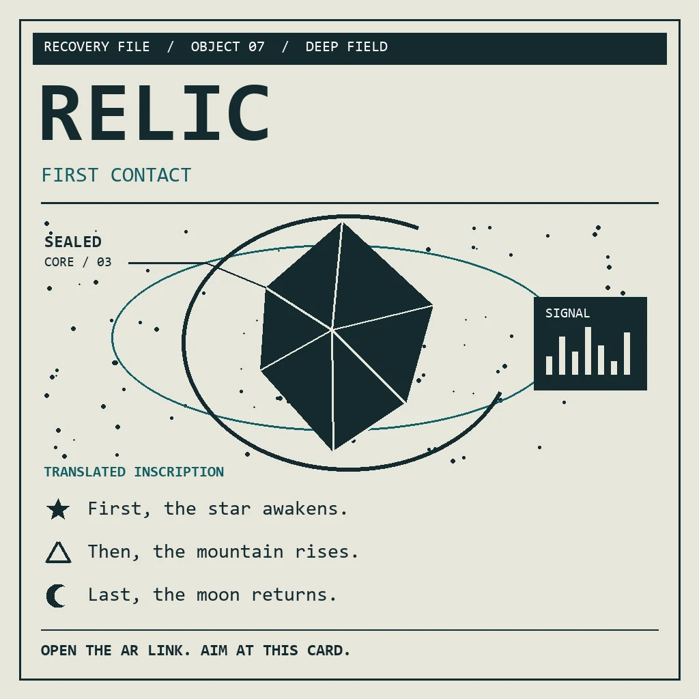

Software development
Programming fundamentals, object-oriented development, data structures, algorithms and practical problem-solving.
- Web development
- Databases
- Software design
- Testing & debugging
Galway, Ireland
I’m Danil Hordiienko, a fourth-year student at ATU Galway. I started with software development and now combine that technical foundation with digital media — giving me a useful mix of structured problem-solving and creative production.
My background is a little different: alongside my studies I have worked in retail, hospitality and cinema, appeared in film productions, and spent nine years in professional football. Those experiences taught me discipline, confidence with people and how to contribute when a team is under pressure.
I’m quick to learn new tools and I use AI as a practical part of my workflow — for research, ideation and faster prototyping. I still check the details, test the result and make the final decisions myself.
Personal & mission statement
My next step is a graduate or junior development role with a strong frontend focus. I want to contribute to a development team, learn from experienced colleagues and keep building my own web projects. My software foundation helps me structure a solution; digital media helps me think about how someone will experience it.
My mission is to build useful, accessible web products that make everyday tasks easier. I want to take ownership, communicate openly and improve through practice and feedback. Backend APIs, databases and reliable testing are the skills I want to strengthen next.
My course combines programming and computing fundamentals with hands-on digital production, interaction design and web work.
Programming fundamentals, object-oriented development, data structures, algorithms and practical problem-solving.
Designing content and interactive experiences across web, visual, motion and multi-platform formats.
Clear communication, project organisation and a calm approach to learning unfamiliar tools or solving new problems.
Using AI thoughtfully to explore ideas, structure research, prototype faster and improve a first draft.
Years 1–2
Programming, web design and development, databases, object-oriented computing, networking and academic teamwork.
Years 3–4
Interaction design, dynamic web, digital marketing, multimedia production, 3D content and project-based creative work.
Independent web delivery alongside coursework in interactive media. Each project below explains the problem, my contribution and what I want to improve next.

ecocleaning.es
A complete service website for an eco-cleaning business on Costa Blanca, with service and pricing pages, booking flows, membership requests, customer accounts and an AI photo estimator.

cocoboom.es
A playful, responsive brand experience for a fresh juice and smoothie bar, combining strong art direction, interactive product presentation and location discovery.

Interaction & game logic
A station prototype developed with Mariia Chalyk. My contribution focuses on the power terminal and the exit it controls.

Image target & sequence interaction
An augmented reality puzzle prototype built with Zapworks, using a printed image target and a short symbol sequence.
My personal portfolio video, bringing my interests and direction together in my own voice.
Completed short courses alongside my degree. Each credential links to the issuing platform so the achievement can be checked.
Completed
National Forum for the Enhancement of Teaching and Learning in Higher Education
Responsible collaboration, evaluating outputs and deciding where a tool can support learning. My practical focus is checking sources and reviewing a result before I use it.
Completed
Microsoft Learn · Learning path achievement
Cloud computing, cloud benefits and service types. All three module assessments passed. This gives me a starting point for comparing hosting options and understanding who manages each part of a cloud service.
Learning path completion; this is not the AZ-900 certification.
My projects connect software work with the experience someone has when using it. A cleaning quote and a game terminal have different audiences, but both need a clear next action and useful feedback.
Independent delivery has given me practice taking responsibility for the whole result. Working on Neptune Silence also means explaining the part I own within a shared project. My next priority is to make testing and feedback more systematic, particularly with people using a project for the first time.
I’m aiming for a junior frontend role while developing my backend skills. I want to connect an interface to an API and database, handle failures clearly and explain the decisions in a case study.
Dated milestones and the next action from each.
Career Path Steps 1 and 2 helped me connect independent web delivery with a junior frontend or full-stack direction. Next action: compare role requirements with evidence from my projects and select practical skill gaps.
Completed AI Fluency for Students. My takeaway is to review the quality and suitability of an output before relying on it. Next action: make source checking and testing part of my project workflow.
Prepared my personal portfolio video. Explaining my background in a short format helps me choose the examples that matter. Next action: keep the video, personal statement and project descriptions consistent.
Completed the Microsoft Learn cloud concepts path and its three assessments. Next action: use service models and shared responsibility to compare options for a small backend project.
The Irish Computer Society represents ICT professionals in Ireland and offers continuing professional development, training and events. A next step in my development plan is to choose a relevant webinar and record one practical lesson I can apply to a project.
EcoCleaning and Coco Boom are independent web projects. Neptune Silence is a team project with Mariia Chalyk; my contribution described here is the power terminal and controlled exit. The Unreal Engine images show an early prototype blockout. RELIC is a Zapworks coursework prototype. Project captures are included to explain the work and its current state.
Course titles and credentials belong to their respective issuers. The abstract hero illustration is portfolio artwork. LinkedIn, live projects and credential records open on their respective platforms.
I bring lessons from retail, hospitality, sport and entertainment into every technical or creative project.
Served customers on the shop floor and at the tills in a fast-paced store. Supported deliveries, stock replenishment and merchandising while maintaining strong standards of service, hygiene and presentation.
Worked across housekeeping and food service in a busy four-star hotel in Clifden. Prepared guest rooms, managed supplies and turnaround times, and supported restaurant and bar service for international guests.
Supported cinema operations and customer experiences, and participated in film productions including Sniper: The White Raven and Zakhar Berkut.
Trained and played in a demanding professional environment. The experience built discipline, resilience and a strong understanding of shared responsibility.
2023 — present
BSc (Honours) in Computing and Digital Media · 4th year · Galway City
Completed
IT & Computer Science · 5-year programme, Kyiv
Open to opportunities
I’d be happy to hear about it.
danilhordiienko@gmail.com +353 89 490 8900 Connect on LinkedIn ↗